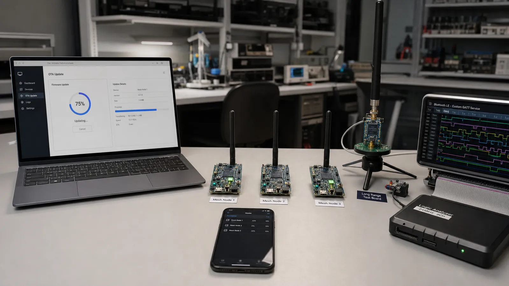

در پروژه پیشرفته، هر قابلیت باید در برابر قطع برق، افت لینک، نسخه قدیمی، حمله و کمبود حافظه مقاوم باشد. نمونه آزمایشگاهی موفق هنوز محصول قابل انتشار نیست؛ مسیر Recovery و مشاهدهپذیری بخشی از طراحی است.
Firmware باید امضا و نسخه آن بررسی شود. داده در قطعهها منتقل، صحت هر بخش کنترل و تصویر در پارتیشن غیرفعال نوشته میشود. Bootloader فقط تصویر معتبر را فعال کند و در شکست راه بازگشت داشته باشد. قطع ارتباط در 90 درصد نباید دستگاه را بلااستفاده کند.
BLE Mesh روی Advertising و مدل Publish/Subscribe شبکه چندگرهی میسازد و با اتصال عادی GATT یکی نیست. LE Coded PHY برد لینک نقطهبهنقطه را در شرایط مناسب افزایش میدهد. Mesh، Relay و برد زیاد هزینه زمان روی هوا و انرژی دارند و باید با توپولوژی واقعی تست شوند.
برای جریان داده، Header شامل Version، Type، Sequence، Length و Checksum تعریف کنید. Flow Control و اندازه صف را مشخص کنید و Receiver اجازه توقف یا کاهش نرخ داشته باشد. فقط به Write Without Response متکی نباشید؛ بافر کنترلر نامحدود نیست.
هر اتصال Context، بافر، CCCD و پارامتر مستقل دارد. Scheduler رادیو باید Eventهای همه لینکها را جا دهد. با افزایش اتصال، Interval، Throughput و مصرف تغییر میکند. سقف عملی را با بار واقعی پیدا کنید، نه فقط عدد Datasheet.
بایت اول Version، بایت دوم Message Type، دو بایت Sequence، دو بایت Length، سپس Payload و CRC قرار دهید. گیرنده ابتدا Length را با MTU و بافر مقایسه کند، Sequence تکراری را رد کند و برای فرمان مهم ACK کاربردی بفرستد.